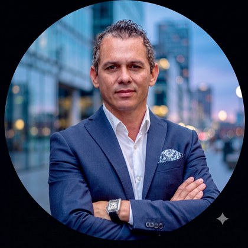

Perfil ejecutivo
Julio Gómez
Country Manager y representante legal en España — Operaciones de negocio reguladas
Más de quince años lanzando operaciones de negocio reguladas en Europa, con la representación legal de la sociedad y la responsabilidad en prevención del blanqueo de capitales ante el SEPBLAC. — Hoy, asesor de fundadores y consejos de administración en entrada al mercado y cumplimiento normativo en Iberia, bajo AML6 y KYC, PSD2 SCA, eIDAS y RGPD.

Experiencia
iBerotech · Associate Partner — Empresas reguladas
—Madrid — Entrada y expansión de mercado Fintech y RegTech en Iberia
- Cumplimiento regulatorio: Adaptando los procesos del cliente a los marcos regulatorios locales e internacionales, AML6 y KYC, PSD2 SCA, eIDAS, RGPD y SEPBLAC, dejando resuelto el cumplimiento antes del lanzamiento.
- Marcos regulatorios: Asesorando a proveedores de verificación de identidad y firma electrónica en su entrada en España y Portugal bajo AML6, PSD2 SCA, eIDAS y RGPD, adaptando su posicionamiento de cumplimiento a las exigencias de cada mercado.
- Asesoramiento a consejos: Asesorando a fundadores y consejos de administración de empresas reguladas, traduciendo prioridades estratégicas en planes de acción con responsables, métricas y una cadencia mensual de revisión.
- Responsabilidad de proyectos: Liderando proyectos de principio a fin en licencias, alianzas, expansión regional y selección de proveedores, trabajando dentro de la gobernanza y las líneas de reporte del cliente.
- Expansión en Iberia: Pilotando la entrada y expansión en Iberia de proveedores internacionales, desde el posicionamiento inicial hasta la firma de contratos con primeras marcas de banca, seguros y telco.
- Relaciones institucionales: Firmando acuerdos con organismos públicos como Madrid Innovation Lab, el Ayuntamiento de Madrid y Business Helsinki, posicionando la firma como puerta de entrada del inversor extranjero.
- Asesoramiento independiente: Asesorando a compradores de nivel C en banca, seguros y telco sobre modernización tecnológica, contrastando soluciones competidoras antes de recomendar una y manteniendo independencia total de proveedor.
Blue Finance · Country Manager — Crédito regulado
-Madrid — Lanzamiento en 90 días, umbral de rentabilidad en el mes 30, mandato de 20 M EUR
- Representación legal: Ostenté el poder de representación de la sociedad española como directivo nombrado, firmando en solitario ante notario, Agencia Tributaria, Registro Mercantil y entidades bancarias desde la constitución.
- Programa de prevención de blanqueo: Respondí de la prevención del blanqueo de capitales desde el lanzamiento, encargando a un despacho externo el manual, la autoevaluación de riesgos y el órgano de control interno, y nombrando al representante ante el SEPBLAC.
- Relaciones bancarias: Abrí y mantuve las cuentas operativas de un prestamista de capital nórdico en BBVA, Santander y CaixaBank, superando la diligencia debida de cada banco sobre la matriz, el origen de los fondos y la actividad antes del primer desembolso.
- Lanzamiento de país: Asumí la responsabilidad íntegra de un proyecto de más de 10 millones de euros, montando una operación de 25 personas y lanzando el negocio en menos de 90 días.
- Escalamiento y liderazgo: Llevé la operación de cero al umbral de rentabilidad operativa mensual en el tercer año, movilizando a más de 60 personas entre equipos internos, proveedores, socios financieros y reguladores.
- Responsable del P&L: Respondí de la cuenta de resultados bajo control de gestión semanal, reduciendo costes, impulsando la originación y conteniendo el impago y el fraude, decidiendo sobre data.
- Gestión de proveedores: Implanté los sistemas de gestión de proveedores y los marcos de cumplimiento que regían la relación con cada prestador de servicios críticos de la operación.
Hanken Business Lab, Hanken School of Economics · Operations Manager
-Helsinki — Dedicación parcial, en paralelo a la tesis del MSc
- Apoyo al consejo: Apoyé al consejo y a la dirección en planificación estratégica, documentación de gobernanza y cumplimiento, sosteniendo a la vez la operación diaria de la incubadora.
- Eficiencia operativa: Gestioné de principio a fin las operaciones del campus, respondiendo del mantenimiento y la seguridad del espacio y de la relación con proveedores y con la administración de la universidad.
- Mentoría de fundadores: Asesoré y mentoricé a fundadores en crecimiento, expansión internacional y desarrollo de red de contactos, impartiendo sesiones semanales con materiales de formación de elaboración propia.
- Reestructuración de procesos: Reestructuré los procesos operativos del Lab, reduciendo la carga administrativa y reinvirtiendo las horas recuperadas en apoyo directo a las startups.
- Diseño de programa: Rediseñé el marco operativo del programa de incubación del Business Lab, reforzando el apoyo prestado a las startups y scale-ups del campus.
- Gestión del ecosistema: Establecí y gestioné las relaciones con proveedores de servicios y socios del ecosistema, coordinando a la vez equipos multiculturales y multidisciplinares dentro de la incubadora.
Período de estudios planificado — Créditos de acceso en Aalto University para la admisión al MSc. -
DinDin · Country Launch Lead — Crédito en efectivo regulado
-Madrid — Mandato de tres meses, lanzado en 83 días y traspasado
- Despliegue operativo regulado: Lancé el primer servicio de préstamo en efectivo en las estaciones de Metro Madrid en España, dirigiendo el proyecto desde la constitución de la sociedad hasta el primer crédito formalizado en ochenta y tres días.
- Autorización regulatoria: Obtuve la autorización de Metro de Madrid para operar con préstamos en efectivo en estación, superando un estándar de seguridad que ningún prestamista había cumplido antes y sentando precedente en España para la distribución física de crédito.
- Diseño de infraestructura: Diseñé la infraestructura de transacción segura, desarrollando e instalando los stands de efectivo conforme a los estándares de seguridad exigidos en estación.
- Verificación en punto de venta: Conecté los puntos de venta móviles mediante red móvil 4G e implanté sistemas AML y KYC con verificación biométrica sobre iPad y análisis de solvencia en tiempo real.
- Logística de efectivo: Diseñé y supervisé la logística diaria de efectivo, coordinando las entregas estación a estación bajo los protocolos de seguridad exigidos por Metro de Madrid.
- Selección y formación: Monté desde cero la plantilla de 22 personas del proyecto en tres meses, cubriendo selección, formación, gestión de conflictos y la salida ordenada del equipo al cierre del mandato.
MyBucks · Operations & Recovery Lead — Recuperación de crédito al consumo
-Barcelona — Rescate de una cartera con 1,2 M EUR en mora
- Estrategia de recobro: Reconstruí la cascada de recobro en los tramos de 30, 60 y más de 90 días, elevando la recuperación un 42% en seis meses y reduciendo el ratio coste-recobro hasta el 3,6%.
- Diseño de gobernanza: Redacté los manuales de operación y los marcos de control de un negocio que había crecido sin documentar los procesos, formando al equipo directamente a partir de estos y otras guías de gobierno.
- Reporte al accionista: Respondí ante el accionista y la matriz con cadencia semanal sobre recuperación, coste y exposición al riesgo de cartera, corrigiendo el rumbo del rescate semana a semana.
- Alianzas bancarias y externalización: Negocié las alianzas bancarias necesarias para operar y externalicé las áreas contable, laboral, jurídica y fiscal, concentrando al equipo interno en recobro y servicio al cliente.
- Mitigación del riesgo: Mejoré el modelo de scoring incorporando datos de buró de Asnef Equifax, Instantor y Experian, con efecto directo en el ratio de repago y en la cuenta de resultados de la operación.
- Puesta en mercado de productos: Dirigí el desarrollo y la puesta en mercado de productos financieros adaptados al mercado español y conformes con la normativa local, liderando los equipos multidisciplinares de cada lanzamiento.
DFC Global Corp · Project Manager — Crédito con garantía de oro, plata y metales preciosos
-Madrid — Traslado de las operaciones del grupo de Finlandia a España
- Control de inventario de oro, plata y lujo: Trabajé dentro del negocio de préstamo con garantía en tienda del grupo en el control de inventario de oro, plata, diamantes, relojes exclusivos y artículos de lujo pignorados y en los procedimientos de cumplimiento de custodia y devolución.
- Traslado de operaciones: Trasladé las operaciones de atención al cliente y recobro de Finlandia a España con plena continuidad y mínima disrupción, montando desde cero la operación receptora.
- Diseño de operaciones: Diseñé el centro de operaciones europeo en Polonia para centralizar la atención al cliente y el back office del grupo en el espacio Schengen, seleccionando una sede de 1.000 metros cuadrados, su distribución y sus proveedores.
- Negociación con proveedores: Renegocié precios y comisiones con proveedores y socios, generando un 30% de ahorro operativo sin perder continuidad y elevando los niveles de servicio contratados.
- Planificación de plantilla: Desarrollé las políticas que coordinaban a más de 20 personas entre sistemas, atención al cliente, centro de llamadas y recobro, repartiendo la carga mediante triaje de tareas y no por función.
- Digitalización del canal físico: Transferí aprendizajes operativos entre el negocio de préstamo con garantía en tienda y la marca de crédito online, digitalizando el canal físico sin perder al cliente presencial.
- Operaciones de la unidad online: Ascendí en 2014 a responsable de operaciones de la unidad online, que facturaba 2,9 millones de euros, atendía a 44.000 clientes y gestionaba una cartera de 16,5 millones de euros.
Multitude Bank · Project Manager Fintech, Operations — Licencia bancaria europea
-Helsinki — Núcleo de operaciones de una de las primeras entidades de crédito digitales de Europa
- Dirección de proyecto: Gestioné como un solo proyecto la externalización del desembolso de efectivo, la verificación bancaria, el scoring y la captación en medios, siguiendo y midiendo a cada proveedor.
- Puesta en marcha: Monté la operación de Madrid desde el primer año, poniendo en pie el centro de servicio, el equipo de recobro, el CRM y la comunicación con el cliente.
- Lanzamiento de producto: Ejecuté los planes de lanzamiento de producto en España, Reino Unido, Nueva Zelanda y Australia, adaptando cada generación del servicio a la normativa y al cliente locales.
- Internacionalización: Llevé en paralelo proyectos de internacionalización que abarcaban desarrollo de producto de pago, externalización de servicios y el rediseño de la interfaz de solicitud.
- Activación de distribuidores: Levanté las redes de socios que llegaron a aportar 800.000 euros de venta mensual, activando uno a uno los distribuidores online y físicos del mercado.
- Despliegue multisede: Sostuve las fechas de equipos multidisciplinares y multisede en un despliegue simultáneo entre las oficinas de Helsinki y la operación de Madrid.
- Piloto de pagos BNPL: Dirigí el piloto de pagos aplazados (BNPL) en punto de venta, desde el diseño del producto, la implantación técnica y la formación a los empleados en las tiendas INTERSPORT.
Formación
Especialidad: Management and Organization · Enfoque: Sustainability and Strategy
Especialidad: International Business · Especialidad secundaria: Marketing
Referencias
Referencias profesionales disponibles a petición.